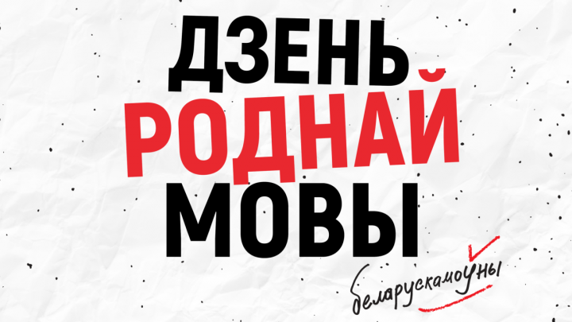
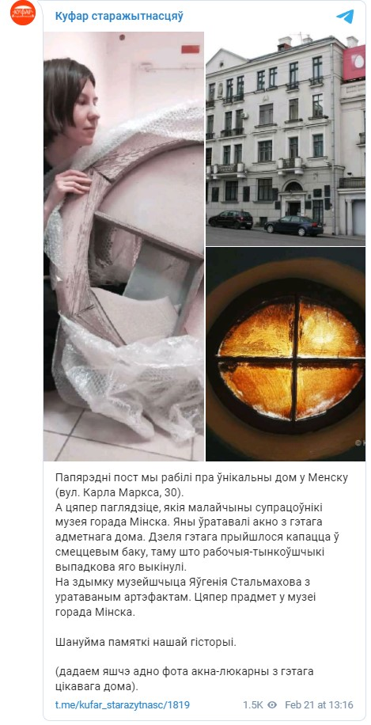
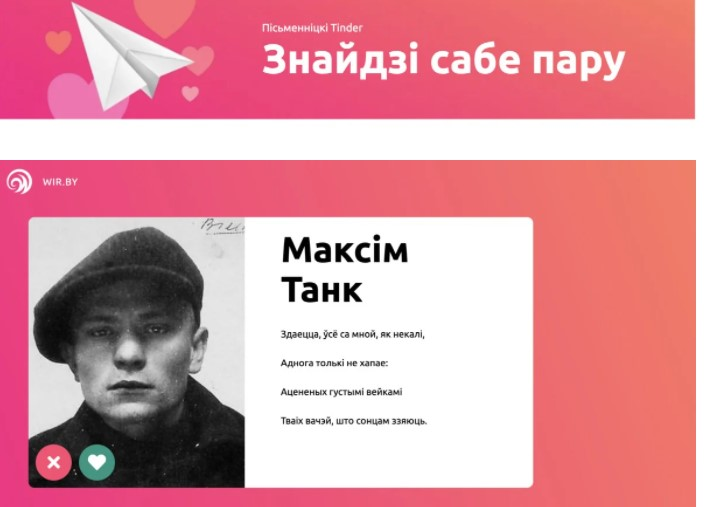
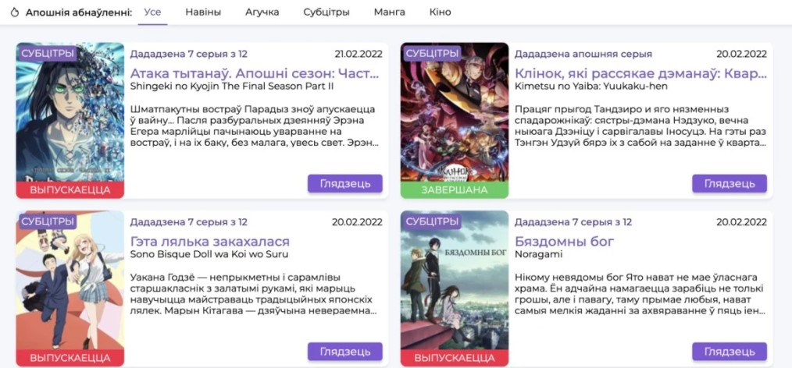
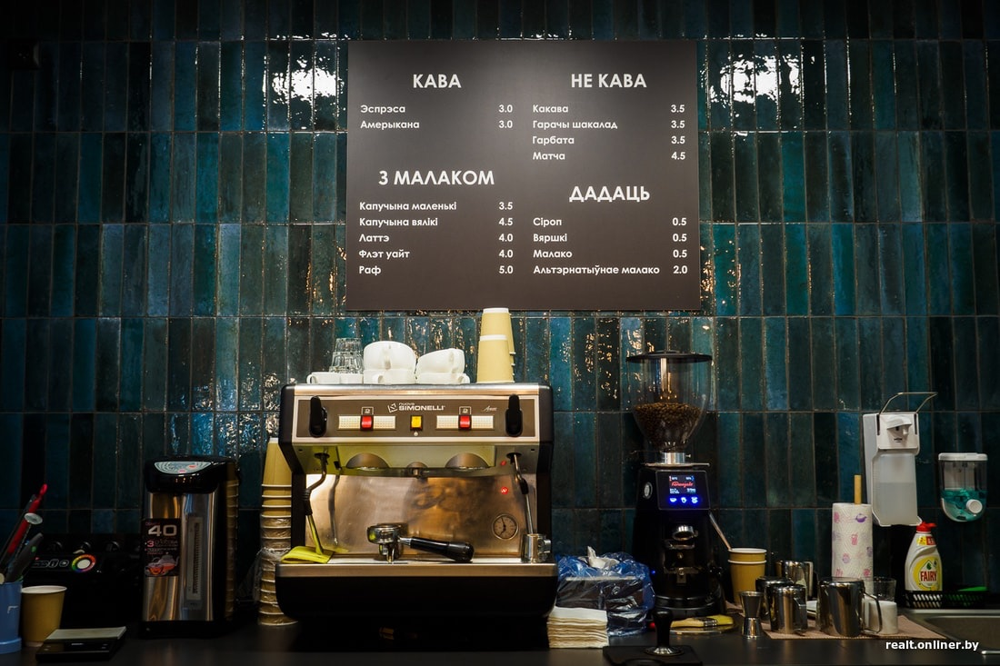

Што б такога пачытаць, паглядзець, паслухаць, паклiкаць на мове
У дзень роднай мовы айцішнікі падзяліліся тым, што яны слухаюць, глядзяць і чытаюць, як вучаць мову і камунікаюць адзін з адным.
dev.by папрасіў беларускамоўных айцішнікаў з EPAM, SOFTSWISS, billwerk і PST Labs — герояў нашых папярэдніх матэрыялаў пра сумоўі і працоўную камунікацыю — падзяліцца сваімі беларускамоўнымі знаходкамі.
Атрымалі вялізны спіс — ад падкастаў ды гістарычных тэлеграм-каналаў да беларускамоўных стыкераў і музычных гуртоў. Падзялілі па тэмах і публікуем, недзе пакінуўшы каментары аўтараў.
Стыкерпакі з Іланам Маскам ды беларускай лаянкай
Беларускамоўных стыкерпакаў у тэлеграме даволі багата.
- Стыкерпак да дня беларускай мовы з бульбай-сэрцам і дыназаўрам «каб не ўмёрлі» з адсылкай да Багушэвіча.
- Зараз не час, але ўжо праз 10 месяцаў спатрэбяцца калядныя стыкеры.
- Шкардзь мардалысая! Блямба! Халера! — гэта ўсё беларуская лаянка.
- Ёсць беларускамоўны Ілан Маск. (Стыкерпак ад «Маланкi», гэта сетка электразарадных станцый Беларусі. — dev.by)
- I такі ж самы кот.
Анлайн-сустрэчы з беларускамоўнымі і якасныя слоўнікі
СуперМова, Лёгкая мова, Мода на мову
Усе гэтыя каналы дапамогуць у вывучэнні беларускай мовы. Як размаўляць па-беларуску, палепшыць слоўнікавы запас, даведацца значэнне фразеалагізмаў. І не рабіць вялікія вочы, калі бачыш незнаёмае слова. Гэта адзін з фразеалагізмаў, які тлумачылі ў каналах нядаўна. Які значыць «здзіўляцца». Дарэчы, тут жа публікуецца афіша беларускамоўных анлайнавых ды афлайнавых падзей.
Вольная мова
Гэта суполка для тых, хто стаміўся вывучаць мову пасіўна і жадае размаўляць. Гэта платформа па арганізацыі анлайн-сустрэч для людзей, дзе па-беларуску абмяркоўваюць абсалютна розныя тэмы.
Слоўнік Скарнік
«Ім карыстаюся найчасцей, не заўсёды безальтэрнатыўна, але вельмі зручна»
Слоўнік Слоўнік
«Для больш дасканалай інфармацыі, калі трэба прагледзець варыянты, разабрацца з шматсэнсоўнасьцю ці знайсці якое слова, таксама зручна, але трэ паболей разьбірацца, таму ён на другім месцы».
Беларуская Вікіпедыя
«У Вікіпедыі стараюся чытаць артыкулы на беларускай (наркамаўка і тарашкевіца), асабліва па Беларусі. Па іншых тэматыках, на жаль, беларускія артыкулы часцяком саступаюць змястоўна версіям на іншых мовах: перадусім, на рускай і ангельскай».
Падарожжы, гісторыя, фотаархіў
Куфар старажытнасцяў
Праект супрацоўніка музея Купалы Паўла Каралёва пра цікавыя гістарычныя знаходкі. Павал некалькі гадоў збірае ў Мінску рэшткі посуду, будаўнічых матэрыялаў, упрыгожванняў, па якіх аднаўляе гісторыю. Ён цікава распавядае не толькі пра свае знаходкі, але і пра тыя, якія былі зроблены яшчэ да яго нараджэння. Напрыклад, у 60-я гады каля дома Купалы быў знойдзены кубак для кавы. Калі яго паказалі ўдаве пісьменніка Уладзіславе Луцэвіч, тая расплакалася, бо прыгадала гэты посуд з пісьменніцкага дома.
Veha.by
Фотаархіў, у стварэнні якога прынялі ўдзел больш за 650 чалавек і некалькі калекцыянераў. Тут сабраныя здымкі простых беларусаў, па якіх можна адсачыць гісторыю.
— Прыняць удзел у стварэнні гэтага сацыяльнага архіва можа кожны. Мы збіраем толькі адсканаваныя фотаздымкі — арыгіналы захоўваюцца ў вашай сям'і. Далей, апісваем кожны здымак, каталагізуем, праводзім рэтуш і публікуем у нашым онлайн архіве, — пішуць аўтары праекта. — Вы можаце знайсці ў архіве VEHA фатаграфіі сваякоў — хоць гэтыя фота даслалі нам іншыя людзі ці музеі. Калі гэта так — напішыце нам, мы падзелімся з кантактамі адпраўнікоў і калі трэба даладзім апісанне.

Sacral_BY
Тэлеграм-канал пра турызм па Беларусі. Тут публікуюцца аповеды пра падарожжы і гістарычныя звесткі пра беларускія мясціны і дзеячоў, з імі звязаных.
Канал пісьменьніка Кірыла Стаселькі
Гэта зусім невялічкі канал з нячастымі абнаўленнямі. Сучасны аўтар Кірыл Стаселька публікуе там свае гісторыі. Напрыклад, вось:
«Трошкі пра аналогіі. Калі суп з курыцы ці іншая страва з курыным мясам з’явіліся ў выніку смерці некалі жывой курыцы, у дзяцінстве мне падавалася, што гэткая ж логіка распаўсюджваецца і на іншыя прадукты. Менавіта таму я доўга дабіваўся ў цёткі, якая купіла пончыкі, якую жывёлу прыйшлося забіць, каб атрымалася гэтая смачная рэч».
wir.by
Лекцыі навукоўцаў, відэа, артыкулы, гульні і падкасты пра беларускую культуру. Тут не так часта выходзіць нешта новае, але ўсе матэрыялы знаходзяцца нібы па-за часам і застаюцца актуальнымі.
— З гэтым праектам і яго камандай я звязаны, таму можаце сумнявацца ў маёй аб’ектыўнасці, — кажа герой, які параіў дадаць сайт у спіс. Але ж ад сябе дадаем, што праект сапраўды класны.
— Беларуская культура нярэдка ўспрымаецца ізалявана ад сусветнага і еўрапейскага кантэксту. Мы хочам гэта змяніць, — тлумачаць аўтары праекта.
Набываем кнігі, слухаем падкасты пра літаратуру
Выдавецтва Янушкевіч
«Набываю тут кнігі, з апошняга прыдбаў „Сабак Еўропы“ Бахарэвіча».
Беларуская палічка
Электронная бібліятэка беларускай літаратуры. Тут можна знайсці нямала беларускамоўных кніг. А таксама бібліятэку можна пашырыць, даслаўшы сваю кнігу.
Bellit
Падкаст пра сучасную літаратуру, беларускую і сусветную філолага і прадавачкі кнігарні Насты Карнацкай.
Беларускамоўны тэлеграм і мапы Organic Maps
«У тэлефоне я па змоўчанні стараюся абраць беларускую мову ў кожным дадатку, дзе гэта магчыма. Не кажучы ўжо пра сістэмныя налады самога тэлефона: напрыклад, дата на застаўцы экрана. Я карыстаюся поштай, сацыяльнымі сеткамі і месенджарамі — і ў кожным намагаюся ўжываць беларускую менавіта ў інтэрфейсе. Канкрэтна: Telegram, Viber, WhattsApp, Skype, Zoom, Signal, Google Mail, Yandex Mail, Yahoo, Instagram, Twitter, Facebook, VK.
Асобна вылучу навігатар Organic Maps ад айчынных распрацоўшчыкаў».
Музыка
Тут проста сабралі гурты і музыкаў, якіх параілі нашы героі.
Няміга-гурт, Akute, Аляксандр Памідораў, Бяз Назвы, Palina, Lear, Лявон Вольскі, Зміцер Вайцюшкевіч, ДайДарогу, Naka, Мутнаевока, NizKiz, NaviBand, Маргарыта Ляўчук, J:Морс, Pylai, Relikt, Intelligency.
Фільмы і серыялы
Фестываль кіно «Паўночнае ззянне»
«Любімы беларускі кінафестываль. Паказваюць фільмы з беларускімі субтытрамі (а часам і з беларускай агучкай), усе мерапрыемствы праводзяць па-беларуску. Апошнія два гады адбываецца ў анлайн-фармаце».
КінаКіпа і kykymba.com
Фільмы, серыялы і мультфільмы па-беларуску.
Беларуская манга і анімэ
— Мы дзейнічаем у трох напрамках: пераклаем мангу, ствараем разважальны кантэнт, агучваем і робім субтытры для анімэ. Мы пачалі перакладаць у 2017 годзе і з таго часу выпусцілі па-беларуску дзясяткі тайтлаў мангі і анімэ, — распавядаюць аўтары. — Сёння ў камандзе больш за 50 прафесіяналаў: перакладчыкаў, дабераў, рэдактараў, маркетолагаў. Гэтыя цудоўныя людзі вельмі розныя ў жыцці: настаўнікі і студэнты, бармэны і інжынеры, музыканты і фрылансеры. Усе рознага ўзросту і поглядаў на жыццё; але аб’яднаныя агульнымі каштоўнасцямі — узаемапавагай, апантанасцю мовай і анімэ, любоўю да сваёй краіны.
А яшчэ…
«Ну і дарэчы, лепшая беларускамоўная кавярня ў Мінску — гэта «Апостраф на Алібегава, 28. Там беларускамоўныя барысты, літаратура і усё астатнее».
Дадавайце цiкавосткi ў каментах!